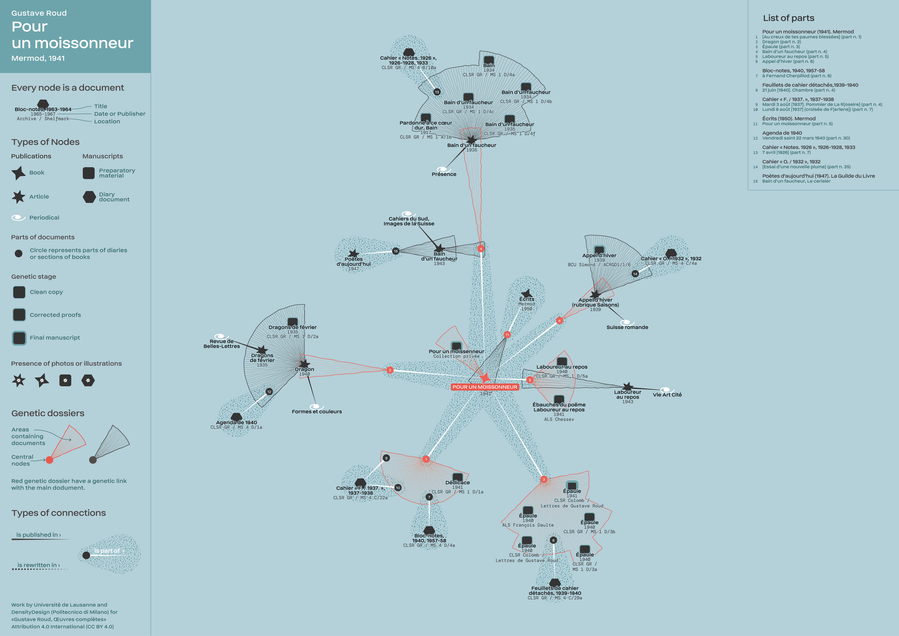

Genetic networks.
The case of Gustave Roud
Scholarly Editing and Digital Textuality, Prof. Paola Italia
Elena Spadini (University of Basel)
- Gustave Roud, works and genesis
- Edition(s)
- Genetic relationships + exercise
- Conclusions
Gustave Roud, works and genesis

Gustave Roud, 1897-1976
Gustave Roud, Del camminare in pianura, Armando Dadò Editore, Locarno, 2014.
Gustave roud, Requiem e altre prose poetiche, Interlinea, 2006.
Bruno Pellegrino, Là-bas, août est un mois d'automne, Zoé, Genève, 2018 [link]
in it: Laggiù, agosto è già autunno, Armando Dadò Editore, Locarno, 2020.
Gustave Roud,
« Œuvres complètes »
Direction : Claire Jaquier et Daniel Maggetti
Collaborateurs et collaboratrices : Alessio Christen, Bruno Pellegrino, Elena Spadini, Julien Burri, Raphaëlle Lacord
Three ways to compose his texts
- A. Classical genesis: text and avant-textes
- B. From the diary: diary entries, genetic materials a posteriori
- C. Genesis from previously published texts: reuse and continuation, post-editorial or epi- genesis
Liste « Thèmes p. l’article de la Guilde »
« Deux fragments d’un hommage à C. F. Ramuz », Suisse romande, no 2, 1er juin 1938, pp. 80-82
Brouillon, « L’Hiver au village »

Mise au net, « Le Monde réel »

Brouillon, « Villages »

Exemple.
Air de la solitude
Notre longue marche par un pays pluvieux nous a conduits à ces quelques minutes au bord d’un lac d’argent pâle et lisse. Nous ne parlions plus. Ce silence était si lourd, si calme ; l’instant plus délicat que le paysage là-bas doucement repris par une brume translucide.

Edition(s)
Edizione di filologia d'autore
- testo di una redazione (prima, ultima, intermedia)
- apparato (genetico, evolutivo; verticale, orizzontale)
- postille
- varianti
Types d'édition génétique
- éditions horizontales : étudier une phase précise de la genèse (synchronie)
- éditions verticales : traverser l'épaisseur du dossier de genèse (diachronie)
œuvres complètes de Gustave Roud
journal intime
œuvre poétiques
propos
traductions
(photographies)
Why is this edition critical?
Which is the scientific statement?
Genetic relationships
Data model
"formulare un modello di certi fenomeni equivale a formulare un'ipotesi su quei fenomeni"
"un modello di dati [deve essere] in grado di formalizzare i procedimenti analitici e critici applicabili allo studio del testo"
Il ruolo del modello nella scienza e nel sapere (Roma, 27-28 ottobre 1998), Sergio Carrà (ed.), Accademia nazionale dei Lincei, Roma 1999.
McCarty, Willard. 2004. ‘Modeling: A Study in Words and Meanings’. In A Companion to Digital Humanities, edited by Susan Schreibman, Ray Siemens, and John Unsworth. Oxford: Blackwell. http://www.digitalhumanities.org/companion/.
modelling
the document and the work:
the Text Encoding Initiative (TEI)
Some examples:
- Johann Wolfgang Goethe: Faust. Historisch-kritische Edition. Herausgegeben von Anne Bohnenkamp, Silke Henke und Fotis Jannidis unter Mitarbeit von Gerrit Brüning, Katrin Henzel, Christoph Leijser, Gregor Middell, Dietmar Pravida, Thorsten Vitt und Moritz Wissenbach.
- The Shelley-Godwin Archive. Retrieved from http://shelleygodwinarchive.org


From the document to the network
https://doi.org/10.5281/zenodo.7408677
Semantic web. A web of linked data
The Semantic Web provides a common framework that allows data to be shared and reused across application, enterprise, and community boundaries (W3C). Data are organized following rules defined in shared ontologies, which allows the query of big corpora and inferences.
 |
Example: Europeana Other examples: governments (data.gov.uk), libraries (data.bnf.fr), web searches (Google Knowledge Graph), bio-medical resources (The Gene Ontology Resource |
Semantics in RDF triple
| subject | ⎯ predicate ➝ | object |
| ms BJ Rkp. Przyb. 9/19 | ⎯ has author ➝ | Wisława Szymborska |
| ms BJ Rkp. Przyb. 9/19 | ⎯ is preserved in ➝ | Biblioteka Jagiellońska |
| ms BJ Rkp. Przyb. 9/19 | ⎯ has digital copy identifier ➝ | NDIGORP042968 |
| manuscript | ⎯ has author ➝ | person |
| manuscript | ⎯ is preserved in ➝ | library |
| manuscript | ⎯ has digital copy identifier ➝ | id |
Dalla visualizzazione alla visualizzazione di dati
Christen and Spadini 2019, https://gen-o.github.io/
Conclusions
Data model as formalisation of your understanding and interpretation of the data
Ontologies for sharing and reusing data and data models
Thank you.
Bibliography in:
Christen, Alessio, and Elena Spadini. 2019. ‘Modeling Genetic Networks. Gustave Roud’s Œuvre, from Diary to Poetry Collections’. Umanistica Digitale 7. https://doi.org/10.6092/issn.2532-8816/9063.
elena.spadini@unibas.ch